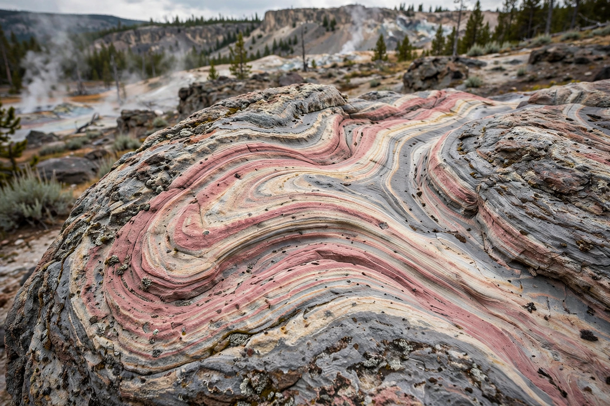

Rhyolite is the most silica-rich of volcanic rocks. It is generally glassy or fine-grained (aphanitic) in texture, though some samples may be porphyritic. It is composed predominantly of quartz, plagioclase, and sanidine, with minor amounts of hornblende and biotite. Rhyolite is the extrusive equivalent of granite.

Rhyolitic magma is highly viscous because of its high silica content (typically 69–77% SiO2), so rhyolitic eruptions tend to be explosive, producing pyroclastic deposits, ignimbrites and lava domes rather than fluid flows. Famous rhyolitic centres include Yellowstone, the Taupo Volcanic Zone in New Zealand, and Lipari in Italy, from which the rock was first described by Ferdinand von Richthofen in 1860 — the name derives from the Greek rhyax, a stream of lava.
Rhyolite commonly forms at convergent plate boundaries and in continental rift settings. In prehistory it was quarried for stone tools where it occurred, such as in eastern Pennsylvania; today it is used as aggregate and decorative stone. Weathered rhyolite can host deposits of uranium, lithium and other elements, and rhyolitic tuffs are associated with hot springs and geothermal systems.